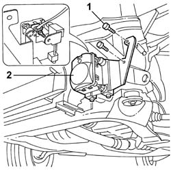

5580A74 RADAR UNIT for ADAPTIVE CRUISE CONTROL (A.C.C.) - R.R.
- Path
- Procedures > 55 ELECTRICAL EQUIPMENT > 5580 SPECIAL ACCESSORIES > 5580A CRUISE CONTROL SYSTEM > 5580A74 RADAR UNIT for ADAPTIVE CRUISE CONTROL (A.C.C.) - R.R.
- Kind
- repair procedure (removal / refitting; the operation number is the code)
- Applies to
- all engines; all production periods
- Interactive page
- https://sloeber94.github.io/elrnDB-lThss/en/#/500203
Applies to: all engines; all production periods
 Removing
Removing
 Refitting
Refitting- Open the boot, remove the cover on the left hand side and disconnect the negative battery lead.
See in Op. 7055B54 PROTECTION/GUARD under engine - R.R.
See in Op. 7210E10 FRONT BUMPER
1. Undo the retaining nuts.
2. Disconnect the electrical connection (2a) and remove the radar (2b).

Applies to: all engines; all production periods
Refitting
Removing- Place the sensor in position and connect the electrical connection.
- Tighten the retaining nuts.
See in Op. 7210E10 FRONT BUMPER
See in Op. 7055B54 PROTECTION/GUARD under engine - R.R.
- Connect the negative battery terminal and position the cover.